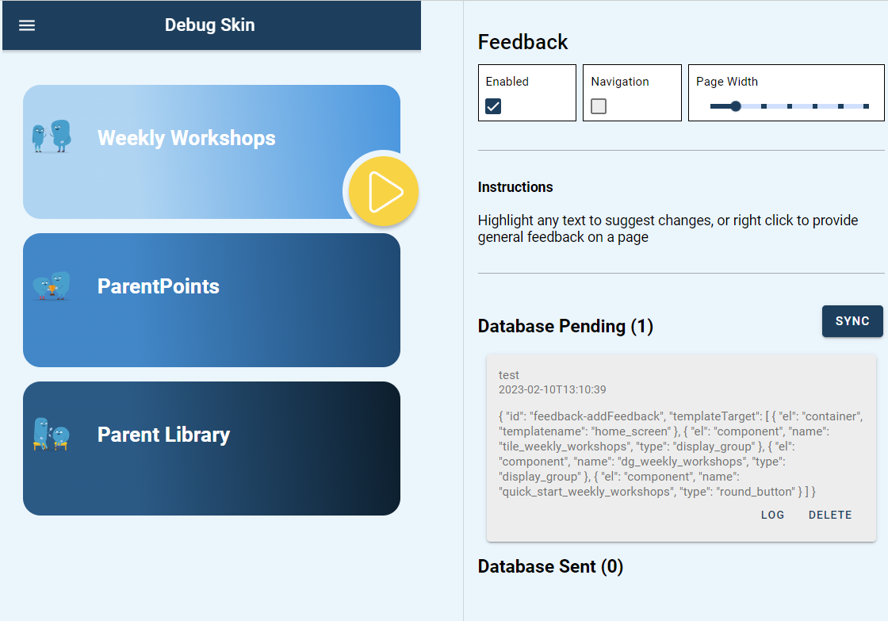
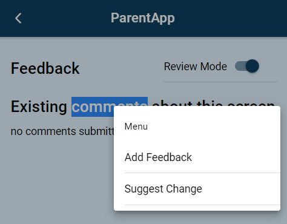

Feedback¶
The feedback feature provides means by which users can provide contextual feedback within the app, such as a bug report, content suggestion or short survey
Enabling Feedback¶
The feedback sidebar can be toggled using the feedback:open or feedback:close action, e.g.
click | feedback:open
This will navigate the current page url to include a sidebar for feedback appended to the url, e.g. /template/home_screen(sidebar:feedback)
Any page can also be directly shared or linked in this form to open with feedback enabled

Context Menus¶
By default feedback options will be presented when the user carries out different context actions, such as right-click (web) on long-press (mobile) actions, as well as text selection.

Each of these actions can have multiple actions registered within a context menu, which can be used to launch an appropriate template. Actions contain the following fields:
| field | description |
|---|---|
| id | A unique identifier that will be used to register and unregister the menu action |
| menuButtonText | Text to display in menu |
| appearInMenus | List of menus for action to appear in. Valid options are rightClick, longPress and textSelect |
| displayedTemplate | Name of template to launch when button clicked |
The default buttons are registered in the FEEDBACK_MODULE_DEFAULTS constant. For the example screenshot above the configuration would be:
[
{
id: "feedback-addFeedback",
menuButtonText: "Add Feedback",
appearInMenus: ["rightClick", "longPress", "textSelect"],
displayedTemplate: "feature_feedback_default",
},
{
id: "feedback-suggestChange",
menuButtonText: "Suggest Change",
appearInMenus: ["textSelect"],
displayedTemplate: "feature_feedback_text_select",
},
]
Tip
The same feedback button can be used in multiple context menus, and similarly each context menu can have multiple buttons that link to different templates
Submitting Feedback¶
The launched template should at a minimum contain an input box for users to record their feedback and a submit button that triggers a feedback:submit event.
Any data to be submitted should be included with the trigger as an additional argument. Here is an example of a template that will submit feedback typed into a text_area by the user and stored as the @local.feedback variable.
| type | name | value | action_list |
|---|---|---|---|
| title | title_1 Feedback | ||
| text_area | feedback | ||
| begin_display_group | dg_buttons | ||
| button | button_cancel | Cancel | click | feedback:cancel; |
| button | button_submit | Submit | click | feedback:submit:@local.feedback; |
| end_display_group |
Feedback Metadata¶
Alongside user-specified data various metadata will be added. See example output below
{
"context":{
"id": "feedback-suggestChange",
"selectedText": "about this screen" // if menu triggered by textSelect this will be present
},
"feedback": "The feedback system works great!", // feedback returned by template
"metadata": {
"app_version": "0.13.0",
"deviceInfo": {
"model": "Windows NT 10.0",
"platform": "web",
"operatingSystem": "windows",
"osVersion": "Windows NT 10.0; Win64; x64",
"manufacturer": "Google Inc.",
"isVirtual": false,
"webViewVersion": "97.0.4692.71"
},
"pathname": "/feedback",
"templateTarget": [
{
"name": "feedback_text_1",
"type": "text"
},
{
"templatename": "feedback_demo"
}
],
"timestamp": "2022-01-07T18:49:53",
"uuid": "my_user_id"
},
}
Debugging Feedback¶
The feedback module comes with a debugging page available at /feedback